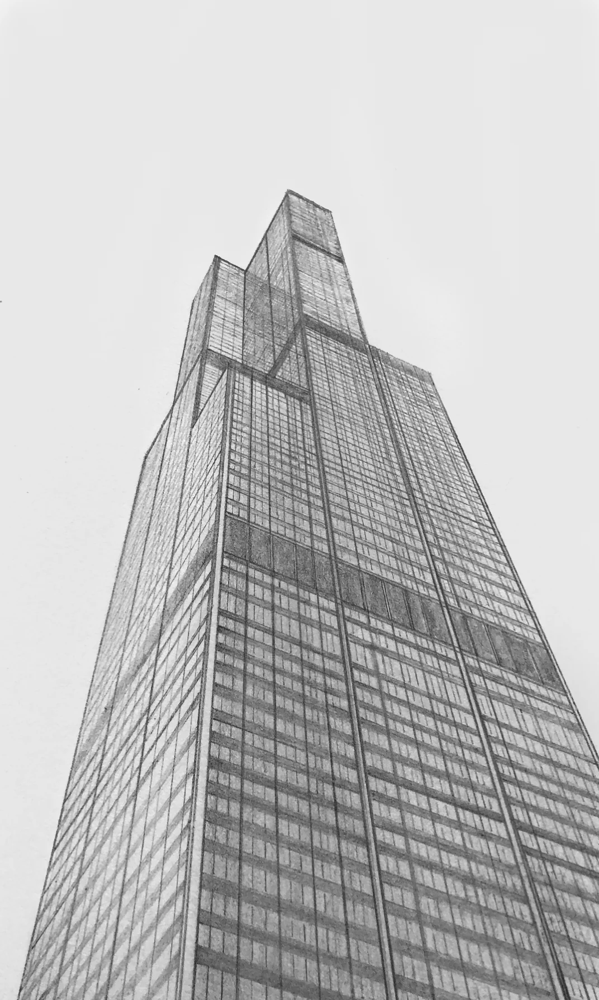
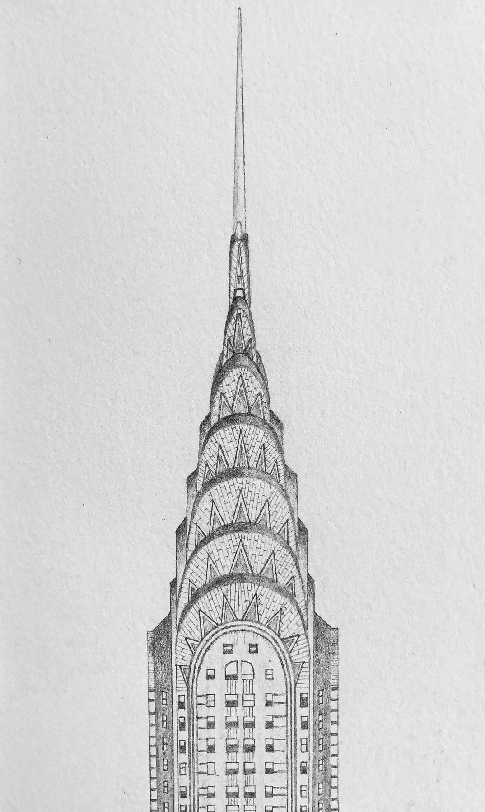

Architectural Drawings


My tiny house drawings were used to inform the original designs for my accessory dwelling unit and portable home projects. The TWA Flight Center and Serpentine Pavilion drawings were completed to inform the design of my Emerging Artists' Center project.
- Medium
- Graphite on paper.
- Dimensions
- 5" × 3".



These skyscraper studies were completed to help inform the original design for my own skyscraper project.
- Medium
- Graphite on paper.
- Dimensions
- 3" × 5".


I have a tremendous amount of respect for the ornate details and complex geometries that Antoni Gaudí, Ivan Barma, and Postnik Yakovlev incorporate in their architecture. So, I decided to draw some of their work in an effort to discover more of the details.
- Medium
- Graphite on paper.
- Dimensions
- 6" × 8".